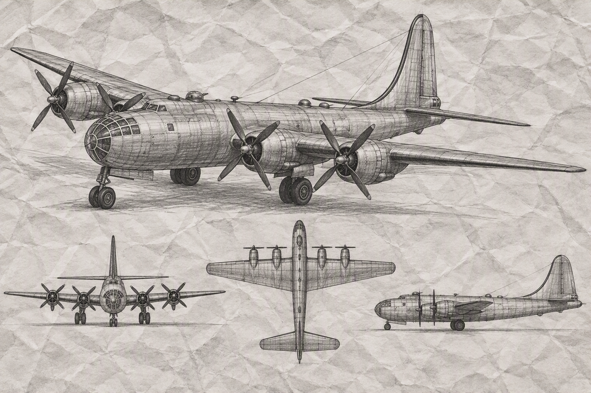

B-29 Superfortress (USA)
1. A B-29 Superfortress története és hadi alkalmazása
A Boeing B-29 Superfortress a második világháború egyik legfejlettebb és legnagyobb hatású repülőgépe volt, amelyet kifejezetten a csendes-óceáni hadszíntér hatalmas távolságainak leküzdésére terveztek. A projekt óriási költségvetéssel gazdálkodott, és összköltsége még az atomfegyver kifejlesztését célzó Manhattan Terv büdzséjét is meghaladta. Ez volt az első olyan sorozatban gyártott bombázó, amely teljesen túlnyomásos kabinnal rendelkezett, így a személyzet nagy magasságban oxigénmaszk nélkül is teljesíthetett szolgálatot. A védelmi fegyverzetét analóg számítógépes tűzvezető rendszerrel irányított, távvezérlésű géppuskatornyok alkották. A típus első prototípusa 1942 szeptemberében emelkedett a magasba, és a sorozatgyártás beindítása hatalmas ipari erőfeszítést igényelt. A gépek négy darab nagy teljesítményű Wright R-3350-es csillagmotorral működtek, amelyek kezdetben hajlamosak voltak a túlmelegedésre. A B-29-es mérnöki megoldásai merőben új korszakot nyitottak a repülés történetében, megalapozva a modern stratégiai bombázást.
A B-29-eseket elsősorban a Japán Császárság elleni kiterjedt stratégiai bombázóhadjáratok során vetették be a csendes-óceáni térségben. A Mariana-szigetek elfoglalása után a szövetségesek ideális támaszpontokhoz jutottak, ahonnan közvetlenül elérhették a japán anyaországot. Curtis LeMay tábornok irányítása alatt az éjszakai, alacsony magasságból végrehajtott tűzbombázási taktika óriási pusztítást végzett a főbb ipari városokban. A típus történetének legmeghatározóbb pillanatai az 1945 augusztusában Hiroshima és Nagaszaki ellen végrehajtott atomtámadások voltak. Az Enola Gay és a Bockscar névre keresztelt speciális B-29-esek bevetése felgyorsította a második világháború végső lezárását. A háború után a gép az amerikai stratégiai elrettentés gerincét képezte, és az 1950-ben kitört koreai háborúban is aktívan szolgált. Végül az 1950-es évek végén vonták ki a szolgálatból, de öröksége a mai napig meghatározó a hadirepülés történetében.
2. Technikai leírás és specifikációk
Személyzet: 11 fő (pilóták, navigátor, bombázó, mérnök, rádiós, radaroperátor, lövészek)
Méretek: Hosszúság: 30,18 m | Fesztávolság: 43,05 m | Magasság: 8,46 m
Tömegadatok: Üres tömeg: 33 800 kg | Maximális felszállótömeg: 60 560 kg
Meghajtás: 4 × Wright R-3350 Duplex-Cyclone turbófeltöltős csillagmotor (2200 LE/motor)
Sebesség: Legnagyobb sebesség: 574 km/h | Utazósebesség: 350 km/h
Hatótávolság és csúcsmagasság: Harci hatótáv: 5230 km | Szolgálati csúcsmagasság: 9710 m
Önvédelmi fegyverzet: 8–12 × 12,7 mm-es M2 Browning géppuska távvezérelt tornyokban
Bombaterhelés: 9000 kg belső bombatérben, illetve speciális nukleáris fegyverek (Little Boy, Fat Man)
Kabinrendszer: Túlnyomásos orr-, középső- és farokkabingyűrűk összekötő alagúttal
Elektronika: General Electric analóg számítógépes tűzvezetés és AN/APQ-13/7 radarberendezés
